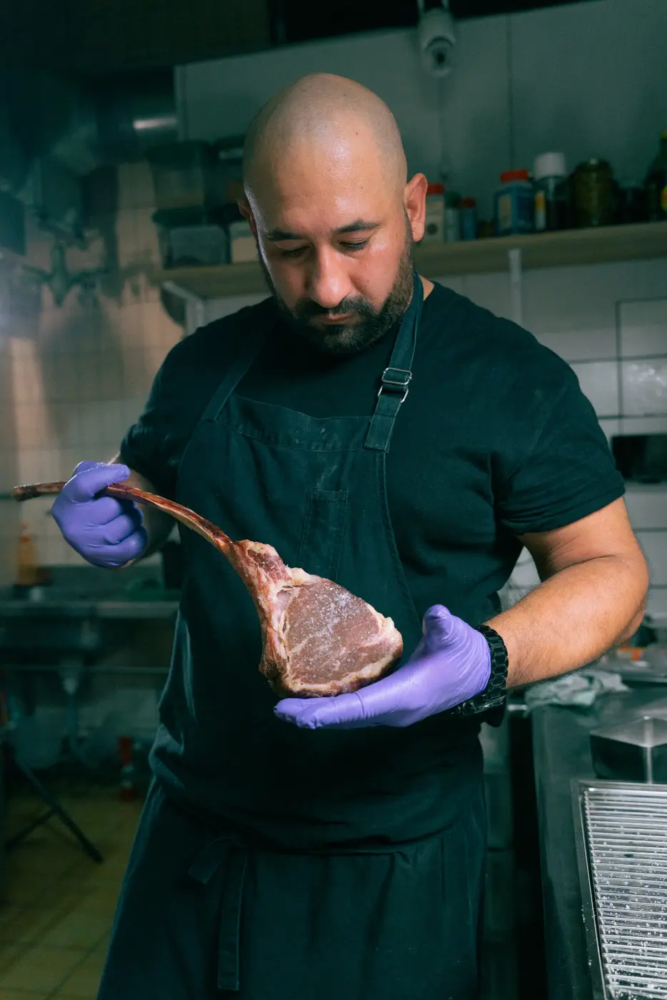

從 Arta Terme、雪梨，到台中大墩路。
在主理 TANO 以前，這位義大利裔阿根廷廚師已在各地廚房工作十多年，先後任職於義大利 Arta Terme 的 4 星級 Grand Hotel Gortani，以及雪梨的 Porteño——2026 年 World’s 101 Best Steak Restaurants 第 36 名。
如今，他將歐洲料理的細緻、阿根廷對炭火與肉品的熱情帶到台中，以熟成牛排與炭火料理，呈現屬於塔諾的餐桌風景。
ARGENTINE · ITALIAN CUCINA
炭火讓肉品留下直接而深刻的香氣，一杯阿根廷 Malbec，讓餐桌多了幾分故鄉的性格。

在主理 TANO 以前，這位義大利裔阿根廷廚師已在各地廚房工作十多年，先後任職於義大利 Arta Terme 的 4 星級 Grand Hotel Gortani，以及雪梨的 Porteño——2026 年 World’s 101 Best Steak Restaurants 第 36 名。
如今，他將歐洲料理的細緻、阿根廷對炭火與肉品的熱情帶到台中，以熟成牛排與炭火料理，呈現屬於塔諾的餐桌風景。
台中市南屯區大墩路918號
查看位置、加入 LINE，或追蹤我們的 Instagram。